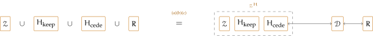
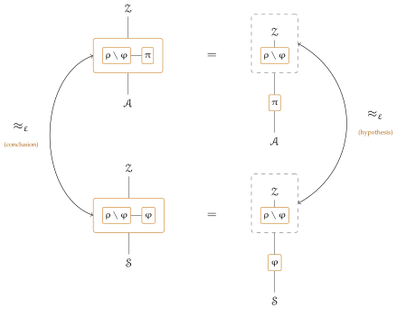

Everything an execution needs is now fixed, so we can say when one system is at least as secure as another. The two are placed under one and the same environment, so what it may claim must be settled first; that is the role of \(\Zenv .\pars \) below.
The value of \(\opl {Exec}(\pi ,\Zenv ,\Adv ,\Corr )\) is whatever the environment returns. We take an environment to return a bit at the root — its guess as to which system it was placed in — and read the execution as returning \(1\) exactly when the environment does. Nothing else in the framework constrains that value, so this is a condition on the environments quantified over, not a consequence. The gap between two executions is then a number, not an informal resemblance.
Definition 4.5 (UC advantage). Let \(\pi \) and \(\varphi \) be systems. For an environment \(\Zenv \), an adversary \(\Adv \) and a simulator \(\Sim \),
the probabilities being over the coins of every machine in the two executions, and \(\opl {Exec} = 1\) abbreviating the event that the execution halts with the environment returning \(1\).
The two executions differ in the system and in the machine that occupies the adversary’s identities: \(\Adv \) on one side, \(\Sim \) on the other. Both are typed by the same pair of definitions.
Definition 4.6 (Adversaries). An adversary is a machine that occupies \(\IDs (\Adv )\) and no other identities and carries the adversary’s interfaces — the wrapper of Section 3.4, guard and silencer, and any further interface that section’s machine is given (Chapter 9 adds one) — around an arbitrary core at each of them. The machine of Section 3.4 is one; the dummy of Section 4.4 is another.
Every simulator is thus an adversary, which is what lets one stand in an adversary class: Proposition 4.12 and Theorem 4.24 read simulators as adversaries, and the budget containments of Section 4.5 compare the two classes directly. Occupancy and the admitted callers are what standing in the adversary’s slot means, so everything Section 3.4 settles about a machine at \((A,P)\) holds of a simulator unchanged: it begins no call of its own, and its silencer lets it claim only the identity it runs at. Proposition 4.19 asks only occupancy of whatever it is given; Theorem 4.29 uses the wrapper and the admitted callers too, and Remark 4.8 explains why neither is a restriction.
The metric takes the three machines as arguments, so emulation can be stated by quantifying over classes of them and bounding the result. Which environments may be used at all is settled by the pair being compared.
Remark 4.8 (What emulation fixes about the adversary slot). Definition 4.10 below constrains \(\Zenv .\pars \) and says nothing about the machines in the adversary slot; Definitions 4.6 and 4.7 say everything needed, and it is less than the five fields. The fields \(\PID \) and \(\Ps \) come free with occupancy: \(\IDs (\F ) = \{(\F .\PID ,P) : P \in \F .\Ps \}\), so occupying \(\IDs (\Adv )\) pins both, giving \(\Sim .\PID = (A,0,0)\) at line 1 and \(\op {global}(\Sim )\) at line 3; and pinning \(\Ps \) is what is wanted, a slot occupant serving fewer parties leaving an \(A\)-identity unoccupied on one side alone, answered \(\rej \) where the other answers. The field \(\pars \) is never read — the silenced set is the literal \(\{\id '' : \id '' \neq \id \}\) of line 2, carried as code by the required wrapper, and it is no formality: a simulator silenced on less could claim a party’s identity, pass the corruption gate \(\id '.F = A\) of line 3, and drive an honest party’s interface, a capability the adversary it stands in for lacks. The field \(\uses \) is inert, read only by \(\WF \), where \(\pi ^{+}\) names the reserved \(\Adv \) rather than the slot’s occupant.
That leaves \(\admits \), which is why Definition 4.7 requires it outright. Widening is impossible, \(\Adv .\admits \) already holding every process id that places a call; narrowing gains a simulator nothing and costs both theorems below. Dropping \(\Stdpid \) turns every mediation hook at a corrupt party into the deemed \(\none \) of Section 3.6 — and Theorem 4.20 quantifies over every \(\rho \), so a simulator admitting only \(\varphi \)’s process ids meets others in the first outer world that has them. Dropping \(\Zpid \) shuts the environment out on the ideal side alone, line 2 at the slot refusing the very instructions the real adversary answers. And nothing in any of this mentions the pair being simulated for, which is what lets Theorem 4.20 hand the hypothesis’s simulator on unchanged.
Definition 4.9 (Environments). An environment is a machine of the execution that occupies \(\IDs (\Zenv )\) together with the identities of finitely many standard functionalities it hosts — none for the machine of Section 3.3, copies of the surrounding protocol for the absorbed environments of Definition 4.15 below. It carries the interface of Section 3.3, silencer and parameter \(\pars \) included, at each \(Z\)-identity, and each hosted functionality’s own full interface at that functionality’s identities; \(\opl {Exec}\) dispatches to it at every identity it occupies, and its output is what its \(\Zenv \) part returns.
Definition 4.10 (Admissible environments). For a system \(\pi \), write \(\ncl {\pi } := \{\, \id \;:\; \id .\PID .F = \F .F \ \text {for some}\ \F \in \pi \,\}\) for its name closure: the identities of every process id carrying a name \(\pi \) uses, occupied or not, in every session and every instance. For systems \(\pi \) and \(\varphi \), the environments admissible for the pair are
The second condition is occupancy hygiene: an execution is defined only for occupants with pairwise disjoint identity sets (Definition 3.3), so an environment hosting at an identity one of the systems occupies could not be placed beside it, and admissibility rules it out for both worlds at once.
The containment is justified below. A statement of emulation then fixes three classes: a class \(\Aset \) of adversaries (Definition 4.6), a class \(\SimSet \) of simulators (Definition 4.7), and a class \(\ZenvSet \subseteq \ZenvSet _{\pi ,\varphi }\) of environments (Definition 4.9). Taking \(\ZenvSet = \ZenvSet _{\pi ,\varphi }\) gives the strongest statement of the three, and is the default reading.
Definition 4.11 (UC emulation). Let \(\pi \) and \(\varphi \) be systems, let \(\varepsilon \geq 0\), and let \(\ZenvSet \subseteq \ZenvSet _{\pi ,\varphi }\). We say that \(\pi \) UC-emulates \(\varphi \) within \(\varepsilon \) against \((\Aset ,\SimSet ,\ZenvSet )\) if
The order of the quantifiers is the substance of the definition: the simulator may depend on the adversary but not on the environment, so one \(\Sim \) must work against every \(\Zenv \in \ZenvSet \) at once. Otherwise the two executions are one experiment with a single system swapped, \(\Zenv \) being literally the same machine on both sides. Weakening it to \(\forall \, \Adv \ \forall \, \Zenv \ \exists \, \Sim \) — a simulator built for the environment it faces — gives a notion Definition 4.11 implies and whose converse we do not prove, the two reading as \(\max _\Adv \min _\Sim \max _\Zenv \) and \(\max _\Adv \max _\Zenv \min _\Sim \) of one quantity in the concrete form of Section 4.5. The composition results survive the weakening, each proof below instantiating the hypothesis at an environment fixed by the conclusion’s; what the order buys is therefore meaning rather than composition, since only under it is \((\varphi ,\Sim )\) one system behaving like \((\pi ,\Adv )\) whoever is watching — an ideal world one can name and hand on.
Definition 4.10 is what makes the comparison meaningful. Since \(\Zenv .\pars \) silences \(\Zenv \), it may claim no identity inside it, and three kinds must be kept out of reach. An identity in \(\IDs (\pi ) \mathbin {\triangle } \IDs (\varphi )\) is occupied in one world and free in the other, so an environment allowed to speak as one is told which world it is in before anything happens, and no simulator can repair that. An identity internal to both separates nothing, but an environment claiming it speaks as a component of the system rather than from outside, which an environment is not for. And an unoccupied identity of a used name is as good as an occupied one, because \(\opl {Guard}\) admits callers by name: a local callee admits every instance of its parent’s name, line 2 asking no more, so an environment claiming a fresh instance of that name drives internal subroutines exactly as their callers do — and against a blocked pair (Chapter 6) it tells the worlds apart outright, the blocker refusing a call the genuine occupant admits. Silencing the closure disallows all three at once. What stays claimable is fresh names, and those reach only what admits all of \(\Stdpid \): the global functionalities, shared between the two worlds in any comparison where they are not themselves at issue.
Silencing governs what \(\Zenv \) may claim, and calling is a second channel it does not touch. An identity of \(\IDs (\pi ) \mathbin {\triangle } \IDs (\varphi )\) may be called in either world: where nothing occupies it the answer is \(\rej \) (Section 3.6), and where something does the answer is \(\rej \) again — provided that something refuses \(\Zpid \) at line 2. The proviso is a condition on the systems being compared rather than on the environment class, and a pair breaking it is simply not emulable, no simulator being able to invent an answer the ideal world has no machine to give. It is why the local subroutines of Chapter 20 keep \(Z\) out of their \(\admits \).
Smaller sets being less restrictive, the least restricted admissible environments are those whose \(\pars \) is the closure exactly — and the blocking of Chapter 6 delivers them for a compatible pair:
by the second claim of Theorem 6.3, and a blocker copies its name from the member it stands in for, so
So \(\Zenv .\pars := \ncl {\overline {\pi }}\) is not merely a value the two blocked systems can share, but the weakest restriction the pair admits.1
One property of the relation is already available, and it is of a different kind from everything that follows. The composition results below — substitution, parallel composition, the completeness of the dummy adversary — are corollaries of a single absorption lemma, each regrouping one execution and reading the same advantage twice. Transitivity regroups nothing. Its proof is the triangle inequality over Definition 4.5 together with the check that the conclusion’s class is admissible for the outer pair, so it belongs to the metric rather than to the machinery and needs none of the apparatus of the rest of this section. It is stated here for that reason.
Proposition 4.12 (Transitivity). Let \(\pi \), \(\varphi \) and \(\psi \) be systems and let \(\ZenvSet \subseteq \ZenvSet _{\pi ,\varphi } \cap \ZenvSet _{\varphi ,\psi }\). If \(\pi \) UC-emulates \(\varphi \) within \(\varepsilon _1\) against \((\Aset ,\SimSet ,\ZenvSet )\) and \(\varphi \) UC-emulates \(\psi \) within \(\varepsilon _2\) against \((\SimSet ,\SimSet ',\ZenvSet )\), then \(\pi \) UC-emulates \(\psi \) within \(\varepsilon _1 + \varepsilon _2\) against \((\Aset ,\SimSet ',\ZenvSet )\).
Proof. First, the conclusion is a legal statement of emulation. A \(\Zenv \) in both classes has \(\Zenv .\pars \supseteq \ncl {\pi } \cup \ncl {\varphi }\) and \(\Zenv .\pars \supseteq \ncl {\varphi } \cup \ncl {\psi }\), hence \(\Zenv .\pars \supseteq \ncl {\pi } \cup \ncl {\psi }\); and it hosts at no identity of \(\IDs (\pi ) \cup \IDs (\varphi )\) nor of \(\IDs (\varphi ) \cup \IDs (\psi )\), hence at none of \(\IDs (\pi ) \cup \IDs (\psi )\) — so both clauses of Definition 4.10 hold and \(\ZenvSet \subseteq \ZenvSet _{\pi ,\psi }\); the three systems need not be related for this. Now let \(\Adv \in \Aset \). The first emulation supplies \(\Sim \in \SimSet \), and since the second quantifies its adversaries over \(\SimSet \), reading \(\Sim \) as an adversary against \(\varphi \) yields \(\Sim ' \in \SimSet '\). For every \(\Zenv \in \ZenvSet \) the triangle inequality gives
since the middle term \(\Pr [\opl {Exec}(\varphi ,\Zenv ,\Sim ,\Corr ) = 1]\) cancels. As \(\Sim '\) depends on \(\Adv \) alone, it is the simulator required. □
Three constructions below — the absorbed environment here, and the two of Section 4.4 — fold several machines into one occupant of the execution. They share a shape, which we name once.
Definition 4.13 (Bundle). A bundle runs several machines together as a single occupant of the execution, passing the token among them as \(\opl {Exec}\) does and initialising each as \(\opl {Exec}\) would. It occupies a declared set of identities, which the members’ own identities must cover, and takes its output and parameters from a designated member. A call between two hosted machines is served inside, by the bundle’s own routing and without being placed on the execution; a call arriving from outside is served by the member carrying the target identity, through that member’s full interface, guard included; a call a hosted machine places outward is placed on the execution when its target lies in a declared outward set, and answered \(\rej \) otherwise. An instance may in addition route particular calls between its members by hand — interposing one before another, even when the target lies outside every member’s identities — and such an explicit routing governs the calls it names, leaving only the rest to the target rule above.
How a hosted machine’s outward call is claimed turns on occupancy, since a silencer wraps the core of one interface and reaches no further (Chapter 2). A member whose identities the bundle occupies leaves its calls under its own identity, meeting its own silencer alone; a member whose identities the bundle does not occupy has none to claim, so the bundle rewrites each of its outward calls to leave under an identity it does hold — which identity being part of what an instance declares, alongside its outward set — and the rewritten claim meets that interface’s silencer. Which case a member is in is what keeps a bundle faithful to the execution it stands for.
That internal traffic is served rather than placed is what lets a bundle occupy the adversary slot of a system whose cores call it responsively, and it is worth saying why the distinction is not a quibble. The wrapper \(\opl {Respond}\) (Definition 9.1) refuses every call the responder places, so a bundle obliged to place its internal calls could reach none of its own members while answering one — and the simulator of Chapter 20, which drives three hosted hybrids inside each of two responsive answers, could not run at all. Serving them inside leaves the token where it was, which is the whole of what responsiveness asks. What a bundle still may not do inside a responsive answer is reach anything it does not host: the register and the shared functionalities are outside it, so their calls are placed, and refused.
Definition 4.13 already says that a hosted machine comes in two kinds, according to whether the bundle occupies its identities, and the difference is the whole of what follows. A machine whose identities the bundle keeps disappears from the execution’s dispatch and is served inside; one whose identities the bundle cedes must leave them to somebody, and its calls must be placed by that somebody on its behalf. Both moves come up — the first absorbs a protocol, the second an adversary — so we define them together and prove them right once.
Definition 4.14 (Absorption). Let \(\Zenv \) be an environment and \(H\) a finite set of machines of an execution, split as \(H = H_{\op {keep}} \uplus H_{\op {cede}}\), the members of \(H_{\op {cede}}\) being occupants of the adversary slot. The absorption of \(H\) into \(\Zenv \) is the bundle (Definition 4.13) \(\Zenv ^{H}\) of \(\Zenv \) with one copy of each member of \(H\); it occupies \(\IDs (\Zenv ) \cup \IDs (H_{\op {keep}})\), takes its output and \(\pars \) from \(\Zenv \), and has as outward set the identities the surrounding execution still serves. A member of \(H_{\op {keep}}\) keeps its identities, so its calls leave under its own claim and calls addressed to it are served inside the bundle. A member of \(H_{\op {cede}}\) keeps none, so the bundle rewrites each outward call \(\id ''.\fopl {Op}(x)\) it places while running at \((A,P)\) as the instruction
and the identities it cedes are occupied in the new execution by a relay for it, which throughout is the dummy \(\Dum \) of Section 4.4.
We state the ceding case for the adversary slot alone. It is the only one used below, and the only one whose interface has an instruction shape to rewrite calls into — a standard functionality serves what its own code names and could not stand in for another machine’s calls.
Definition 4.15 (Absorbed environment). Let \(\varphi \subseteq \rho \), let \(\pi \) be a system to be put in place of \(\varphi \), and let \(\Zenv \) be an environment. The absorbed environment \(\Zenv ^{\rho \setminus \varphi }\) is the absorption (Definition 4.14) of \(\rho \setminus \varphi \) into \(\Zenv \) with every member kept and none ceded, so it is the bundle of \(\Zenv \) with one copy of each \(\F \in \rho \setminus \varphi \), every copy keeping its identities; it occupies \(\IDs (\Zenv ) \cup \IDs (\rho \setminus \varphi )\), takes its output and \(\pars \) from \(\Zenv \), and has outward set \(\IDs (\pi ) \cup \IDs (\varphi ) \cup \{\, \id : \id .F \in \{A,C\} \,\}\). It is an environment (Definition 4.9), not a functionality, since it spans several process ids. The superscript records the hosted shell only — the outward set reads \(\pi \) as well — so \(\Zenv ^{\rho \setminus \varphi }\) is fixed relative to a replacement given by context, and two replacements sharing \(\rho \setminus \varphi \) but differing in \(\pi \) name different machines.
Both halves of the outward set are forced by what the absorbed execution has to reproduce. The first is the slot, whose identities go to \(\pi \) or to \(\varphi \) according to which world the absorbed environment sits in. We take the union rather than \(\IDs (\varphi )\) alone so the same machine serves in both, which matters now that the two need not occupy the same identities. The second is the two reserved ids \(A\) and \(C\), named as ids rather than as machines because the adversary slot holds \(\Sim \) on the ideal side while Proposition 4.19 needs one and the same absorbed machine on both. They are there because the hosted machines are full interfaces rather than bare cores: each reads the register on lines 2 and 6 of Section 3.5, and each hands a call at a corrupt party to the adversary through \(\opl {Mediate}\), which hooks to \((A,\id .P)\). Neither id belongs to any system. Without this half a call to a hosted functionality would be refused at its first line, and a corrupt party’s hook would be refused instead of reaching the adversary: the absorbed execution would stop being the outer one regrouped exactly when \(\Cs \) met \(\rho \setminus \varphi \). Everything else is answered with \(\rej \), nothing serving it in the outer execution either.
The parameter is carried over untouched, and it must be. It is the silenced set of \(\Zenv \)’s own interface, so any change to it changes which calls \(\Zenv \) may place — and \(\Zenv \) is the one machine that has to behave identically on both sides. One might think the hosted functionalities need \(\IDs (\rho \setminus \varphi )\) removed from it to speak as themselves, but they do not: each is a full interface, and line 5 of its own wrapper is what licenses its claim, \(\Zenv \)’s reaching no further than \(\Zenv \)’s own core (Definition 4.13). Removing those identities would licence nothing new for them, and would un-silence \(\Zenv \) on exactly the identities it was silenced on before absorption.
Absorbing thus turns an environment for the outer pair into one for the inner pair, preserving admissibility. The register needs no special treatment: being a member of no system it lies in neither \(\varphi \) nor \(\rho \setminus \varphi \), so the absorbed environment does not host it and blocking builds no blocker for it. Like \(\Zenv \) and \(\Adv \) it is supplied by \(\opl {Exec}\), the same single machine on both sides of every comparison. Its hosted copies keep their identities, so by Definition 4.13 they leave their calls under their own claims and meet their own silencers — not \(\Zenv \)’s — which is what the regrouping below needs; the constructions of Section 4.4 are the opposite case, hosting an adversary whose identities the bundle does not occupy.
Proposition 4.16 (Absorption preserves admissibility). Let \(\rho \) and \(\pi \) be systems, let \(\varphi \subseteq \rho \), and let the replacement of \(\varphi \) by \(\pi \) in \(\rho \) be well-formed. Then
Proof. For the \(\pars \) half, absorption carries the field over untouched, so it is enough that
Every name \(\varphi \) uses is used by \(\rho \), since \(\varphi \subseteq \rho \), and every name \(\pi \) uses is used by \(\rho [\pi /\varphi ]\), since \(\pi \subseteq \rho [\pi /\varphi ]\). For the hosting half, \(\Zenv ^{\rho \setminus \varphi }\) hosts at \(\IDs (\rho \setminus \varphi )\) beyond whatever \(\Zenv \) hosted: the latter avoids \(\IDs (\rho [\pi /\varphi ]) \cup \IDs (\rho )\), which contains \(\IDs (\pi ) \cup \IDs (\varphi )\); and \(\IDs (\rho \setminus \varphi )\) meets \(\IDs (\varphi )\) nowhere, the two being disjoint subsystems of \(\rho \), and meets \(\IDs (\pi )\) nowhere by well-formedness of the replacement — the one place the hypothesis is used, and it is used for typing alone. No relation between \(\IDs (\pi )\) and \(\IDs (\varphi )\) enters. One thing the statement does not say: the absorbed machine claims identities inside its own \(\pars \), each hosted copy claiming its own. That is no contradiction — by Definition 4.13 a hosted copy’s claims meet its own silencer and never the environment’s, and admissibility is a condition on the field, read where the field applies. □
What makes the theorem work is that absorption regroups an execution without changing it. Since the same correspondence serves Section 4.4, we set it down before the lemma.
Configurations. By a configuration of an execution we mean its state between activations: the state of every machine, the unread part of every coin tape, which machine holds the token and where in its code, and the callers suspended awaiting answers. Calls nest, and Section 3.6 lets an instance hold several outstanding continuations, so the last of these is a chain rather than a set: one entry per call placed and not yet answered, in the order placed, recording the caller and the call it waits on.
The two executions do not run the same machines — that is what absorbing does — but they run the same ones once \(\Zenv ^{H}\) is counted as the machines it bundles rather than as one, and but for the relays a ceded identity needs. Definition 4.13 passes the token among those as \(\opl {Exec}\) does, so each holds it in the same sense on either side. Counted so, the machines of the two executions correspond one to one apart from the relays, and we write \(\iota \) for the bijection: the hosted copy of each member of \(H\) to that member, the hosted \(\Zenv \) to \(\Zenv \), and everything the execution still runs, \(\Corr \) included, to itself.
Definition 4.17 (Regrouping correspondence). A configuration \(c\) of the left execution and a configuration \(\hat c\) of the right correspond, written \(c \approx \hat c\), when
Where the right-hand family carries a relay, \(\iota \) is a bijection between the machines of the left and those of the right other than the relay, and (C4) is read with the relay’s own frames elided: a relayed call contributes one frame the left does not have, resumed exactly once with the answer the left’s call returned — save that a \(\rej \) the left reads may arrive as \(\none \) on the right, which is the one place refusal-obliviousness is spent.
Only (C4) is at risk from the bracketing. On the left every suspension is recorded by \(\opl {Exec}\); on the right they divide between \(\opl {Exec}\) and the bundle, which records those of the calls internal to it. The clause asks that the two chains agree once the bundle’s own are counted where they were placed. Regrouping is exactly that: one chain of suspensions, kept by two dispatchers.
The first activation. The two executions begin in correspondence, and it is worth saying why, since this is the one activation the lemma’s case analysis does not reach: it is placed by no machine. Line 1 initialises \(\Corr \) and everything the execution still runs on both sides, Definition 4.14 initialises each hosted copy as \(\opl {Exec}\) would, and a relay carries no state, so every machine and its image start in the same state, which is (C1). No tape has been read, giving (C2). The operation \(\op {Initialize}\) places no calls, so nothing is suspended and both chains are empty, giving (C4) — and with it the reason the order in which the bundle initialises its copies cannot be observed: that order can be read off nothing in the configuration. Line 2 then activates \((Z,Z).\fopl {Z}()\) from \((Z,Z)\). On the left the token goes to \(\Zenv \); on the right it goes to \(\Zenv ^{H}\), where \((Z,Z)\) is carried by the hosted \(\Zenv \), which Definition 4.14 makes the bundle occupy. Both enter \(\fopl {Z}\) at the same identity on the same input, which is (C3).
Thereafter every activation is a call placed or a value returned, and the lemma comes to showing that correspondence survives one of them on either side, and that corresponding configurations halt together with the same output. Its paragraphs take those activations case by case.
Lemma 4.18 (Absorption). Let an execution run the occupants \(\{\Zenv \} \cup H \cup R\), with \(\Corr \in R\) and \(\Zenv \) an environment, let \(H = H_{\op {keep}} \uplus H_{\op {cede}}\), and let \(\Zenv ^{H}\) be the absorption of Definition 4.14. Ask of each member of \(H_{\op {cede}}\), and of nothing in \(H_{\op {keep}}\), that
Then, the two families being legal occupant families in the sense of Definition 3.3,
are identically distributed — equal as distributions, not merely close.
Proof. The argument is one induction on activations, and the five paragraphs below discharge its step. Machines pairs the two occupant families and checks that every machine and its image start alike. Routing asks where each call lands and finds four cases — internal to the group, leaving it, entering at a kept identity, entering at a ceded one — of which only the last differs between the two families. Claims splits on which kind of member placed the call: one keeping its identities meets the same silencers on both sides, while a ceded member has none to claim, so its outward calls are rewritten, and the rewriting must survive three tests — where the bundle may speak from, whether the claim is silenced, and whether it passes the relay’s guard. Refusals isolates the one value that can differ, a \(\rej \) the left reads arriving as \(\none \) on the right, and spends hypothesis (a) on it; hypothesis (b) blocks the mirror problem, a responsive call on a relayed slot. Token checks that the two chains of suspensions agree once the bundle’s own are counted where they were placed. Hypothesis (c) is spent in Claims, on the ceded member’s right to claim \((Z,P)\). Two conventions of Chapters 1 and 3.6 are used throughout and are worth restating. Distinct machines draw from independent coins, and bundling machines into one does not merge their tapes, so a hosted copy’s randomness is what it was before absorption. And \(\op {Initialize}\) places no calls, so the order in which the bundle initialises its hosted copies is unobservable. The proof is an induction on activations: the initial configurations correspond, as shown before the lemma; corresponding configurations produce the same next activation on both sides and step to corresponding configurations, each machine and its image reading the same coins in the same order, which is what (C2) of Definition 4.17 preserves; and corresponding halting configurations output alike, the output being the hosted \(\Zenv \)’s by Definition 4.14. The paragraphs below discharge the inductive step: which machines exist and start alike, (C1); where a call goes and what it claims, (C4); and how the token moves, (C3). The first two paragraphs are common to both kinds of member; the two after them are what a ceded member costs.
Machines. The left runs \(\{\Zenv \} \cup H \cup R\); the right runs \(\{\Zenv ^{H}\} \cup R\) together with a relay at each ceded identity, and \(\Zenv ^{H}\) is \(\Zenv \) with one copy of each member of \(H\). Counted as the machines it bundles, the two collections coincide but for the relays, so \(\iota \) pairs each member of \(H\) with its copy, each member of \(R\) and \(\Corr \) with itself, and leaves the relays over, which is the reading Definition 4.17 gives them. Line 1 initialises \(R\) on both sides, Definition 4.14 initialises the hosted copies as \(\opl {Exec}\) would, and a relay is stateless, so every machine and its image start alike. Occupancy is disjoint on both sides by hypothesis, so each call has a unique target: on the right the bundle holds \(\IDs (\Zenv ) \cup \IDs (H_{\op {keep}})\) and the relays hold what \(H_{\op {cede}}\) let go.
Routing. Take a call and ask where it lands. With both endpoints in \(\{\Zenv \} \cup H\) it is dispatched by \(\opl {Exec}\) on the left and served inside \(\Zenv ^{H}\) on the right, by the same machine either way. Leaving that group it is dispatched by \(\opl {Exec}\) on the left and placed outward on the right, its target lying in the outward set, which Definition 4.14 makes the identities the execution still serves. Entering the group at an identity of \(H_{\op {keep}}\), it is dispatched by \(\opl {Exec}\) on the left and served on the right by the hosted copy carrying that identity, which the bundle occupies. Entering at an identity of \(H_{\op {cede}}\), it is dispatched to the ceded member on the left and to the relay on the right, which is the one place the two families differ and the subject of the two paragraphs below. Addressed anywhere else it has no machine on either side: \(\opl {Exec}\) finds no target and \(\Zenv ^{H}\) answers \(\rej \). Guards are evaluated at the callee from the claimed id, so they agree once the claims do.
Claims, for a member that keeps its identities. Each such call carries the same claimed id on both sides, and the two silencers that could change one are the same silencers on both. A hosted interface is governed by its own silencer and not by the environment’s, by Definition 4.13: it keeps its identities, so \(\opl {Silence}\) at \(\Zenv \) does not reach it. Being a full interface it claims exactly its own identity on either side, line 5 silencing its core on \(\{\id '' \neq \id \}\); and the calls its wrapper places, on \(\Corr \) and through \(\opl {Mediate}\), stand outside even that silencer on both sides. The environment’s own interface is governed by \(\pars \), which absorption carries over unchanged, so \(\overline {\Ids }\) is computed from the same set at the same identity and admits exactly the same claims. Neither machine gains nor loses a claim.
Claims, for a member that cedes them. Such a member has no identity of its own to claim inside the bundle, so Definition 4.14 rewrites its outward calls, and the rewriting has to survive three tests. First, where the bundle may speak from. Whenever the hosted member runs on behalf of party \(P\) — that is, where the left has it running at \((A,P)\) — the bundle is running at \((Z,P)\) or at \((Z,Z)\), or else \(P = Z\): it is entered either by \(\Zenv \) calling an \(A\)-identity, served internally with \(\opl {Guard}_{\Adv }\) forcing the claimed party to be the target’s, and line 3 letting an interface at \((Z,Q)\) claim party \(P\) only when \(Q \in \{P,Z\}\) or \(P = Z\); or by the relay, whose inward call targets \((Z,P)\) exactly. Second, whether the claim \((Z,P)\) is silenced: not by the party-tie just settled, not by line 2 since its name is \(Z\), and not by \(\pars \), which hypothesis (c) empties of \(Z\)-identities. Third, whether it passes \(\opl {Guard}\) at the relay: \(P \in \Adv .\Ps \) at line 1, \(\Zpid \subseteq \Adv .\admits \) with the parties equal at line 2, and \(\op {global}\) at line 3. The relay then places the very call the left placed, under the very claim the left claimed, so both sides meet the same conjuncts at the same callee. A call arriving at the ceded identity travels the other way by the same three tests: it reaches the relay under the guard it passed on the left, is handed to \(\Zenv \) at \((Z,P)\) with its caller in the payload — admitted by the relay’s own silencer and by \(\opl {Guard}_{\Zenv }\), \(\Apid \subseteq \Zenv .\admits \) and \(\op {global}(\Zenv )\) — and reaches the hosted member’s interface at \((A,P)\) through that interface’s guard, the guard that passed on the left.
Refusals. One value can differ. Where a call the ceded member places is refused, the left reads \(\rej \) from its own call, while on the right the relay returns that \(\rej \) and Section 3.6 delivers it to the hosted member as \(\none \). Hypothesis (a) is exactly what closes this: a refusal-oblivious machine answers alike to the two, so its distribution is unchanged. Hypothesis (b) is what stops the other direction of the same problem, a responsive call on a ceded identity: \(\opl {Respond}\) refuses every call the responder places, and the relay must place one to answer at all, so a responsive call on a relayed slot would be answered \(\none \) where the left answered with substance — which is why no core of \(R\) may place one. Nothing else the relay does is visible: \(\op {Corrupt}\) survives the detour, its gate \(\id '.F = A\) met by the relay’s claim, which is the one call the rewriting must place under an \(A\)-identity and the bundle cannot.
Token. \(\opl {Exec}\) has one operation, placing a call, and its continuation is where the token comes back. On the right the calls internal to \(\Zenv ^{H}\) no longer reach that handler, but Definition 4.13 passes the token among the hosted machines as \(\opl {Exec}\) does, so each internal caller is suspended on its own continuation and resumed with the same answer; and each relayed call adds one frame on the right, resumed exactly once, which is the elision Definition 4.17 allows. Two properties of \(\opl {Exec}\) are used, and Section 3.6 grants both to every instance: a machine may hold several outstanding continuations, and may be re-entered while suspended. The second is what a call arriving from \(R\) needs while \(\Zenv ^{H}\) is itself waiting on an outward call. Exactly one machine holds the token at every moment on either side.
Every machine therefore sees the same inputs in the same order and answers from the same tape, so correspondence is preserved at every activation and the two executions agree as distributions — in particular on the probability that \(\Zenv \) returns \(1\). □
Diagrammatically, the lemma is one equality with its two cases side by side: a kept member disappears into the bundle outright, a ceded one is bridged back out through a relay.

A member of \(H_{\op {keep}}\) — like all of \(\rho \setminus \varphi \) in Theorem 4.20’s figure above — is absorbed outright: \(\Zenv ^{H}\) occupies its identity, so \(R\) reaches it only as part of the bundle. A member of \(H_{\op {cede}}\) is hosted too, running on the same tape, but the bundle does not occupy its identity: the relay \(\Dum \) (the dummy of Section 4.4) stands in its place, handing \(R\)’s calls to \(\Zenv \) tagged with their caller and re-emitting the hosted member’s outward calls under its original claim, so neither side can tell a relay sits between them. Hypotheses (a)–(c), asked only of \(H_{\op {cede}}\), are what keep that indistinguishable: (a) is exactly refusal-obliviousness, since \(\Dum \) turns every \(\rej \) it relays into a \(\none \); (b) and (c) rule out a responsive call and a clash on \(\Zenv \)’s own claim, the two other ways a relay’s extra hop could show. Theorem 4.20’s figure is the case \(H_{\op {cede}} = \emptyset \); the mirror case, one ceded occupant standing for the whole adversary slot (\(H_{\op {keep}} = \emptyset \)), is what Section 4.4’s dummy-adversary construction runs on.
The two halves of the lemma are used apart. Absorbing a protocol cedes nothing, so all three hypotheses fall away and what is left is a pure rebracketing; that is the case Theorem 4.20 runs on, and it is worth stating separately for the emphasis that it costs nothing at all.
Proposition 4.19 (Regrouping). Let \(\rho \) and \(\pi \) be systems, let \(\varphi \subseteq \rho \), let the replacement of \(\varphi \) by \(\pi \) in \(\rho \) be well-formed, and let \(\Zenv \) be an environment hosting at no identity of \(\IDs (\rho ) \cup \IDs (\pi )\). Then for \(\sigma \) either \(\pi \) or \(\varphi \), and for any occupant \(\mathcal {X}\) of the adversary slot (Definition 3.3),
are identically distributed — equal as distributions, not merely close.
Proof. Lemma 4.18 at \(H = \rho \setminus \varphi \) with \(H_{\op {cede}} = \emptyset \), so that \(\Zenv ^{H}\) is the absorbed environment of Definition 4.15 and no hypothesis of the lemma applies: (a), (b) and (c) are asked of ceded members and there are none. Note \(\rho [\varphi /\varphi ] = \rho \), so the case \(\sigma = \varphi \) is the ideal side. The two occupant families are legal: the left-hand collection is a system in both cases, so no identity is occupied twice — for \(\sigma = \pi \) because well-formedness says \(\rho \setminus \varphi \) and \(\pi \) share no process id, and for \(\sigma = \varphi \) because that collection is \(\rho \) itself — while on the right the hosting hypothesis on \(\Zenv \) keeps the bundle clear of \(\IDs (\sigma )\). □
The theorem now says that substituting one subsystem for another inside a protocol costs nothing in advantage.
Informally, Theorem 4.20 says: if \(\pi \) UC-emulates \(\varphi \) within \(\varepsilon \), then \(\rho [\pi /\varphi ]\) UC-emulates \(\rho \) within the same \(\varepsilon \). The adversary and simulator classes carry over unchanged; the environments of the conclusion are those admissible for the pair \((\rho [\pi /\varphi ],\rho )\) whose absorbed form \(\Zenv ^{\rho \setminus \varphi }\) lies in the class of the hypothesis.
Theorem 4.20 (Composition). Let \(\rho \) and \(\pi \) be systems, let \(\varphi \subseteq \rho \), and let the replacement of \(\varphi \) by \(\pi \) in \(\rho \) be well-formed in the sense of Definition 4.2. Suppose
Then
where
Explicitly,
Proof. Three relations, of three kinds. The adversary and simulator classes carry over by copying: an adversary is the same machine whichever system it attacks, and nothing typing a simulator mentions the pair it simulates for. The environment class is the one thing computed rather than copied, being the preimage of the hypothesis’s class under absorption. The bound is then two steps. Proposition 4.19, applied once on each side, turns the outer advantage into the inner one exactly — the same absorbed machine serving both sides, which is what its outward set was chosen to allow — and the emulation hypothesis bounds the inner one. So the first relation of the display is an equality, shown as an inequality only for uniformity with the second. The three relations are of three kinds. The adversaries carry over unchanged because the reduction hands on the very same machine: an \(\Adv \in \Aset '\) attacking \(\rho [\pi /\varphi ]\) is read as an \(\Adv \in \Aset \) attacking \(\pi \). Any \(\Aset ' \subseteq \Aset \) would serve, and equality is the largest such choice. The simulators carry over for the mirror reason: the \(\Sim \in \SimSet \) the hypothesis supplies is returned as the simulator for the conclusion, so any \(\SimSet ' \supseteq \SimSet \) would serve, and equality is the smallest. That it may be returned at all is Remark 4.8: nothing typing a simulator mentions the pair it simulates for, so one for \((\pi ,\varphi )\) already stands in the slot for \((\rho [\pi /\varphi ],\rho )\).
The environments are the one place something is computed rather than copied. Here \(\ZenvSet \) and \(\ZenvSet '\) are classes for two different pairs of systems, and \(\ZenvSet '\) is the preimage of \(\ZenvSet \) under absorption,
so an outer environment counts exactly when what it becomes on absorption is one the hypothesis covers. It is a genuine class, since \(\ZenvSet ' \subseteq \ZenvSet _{\rho [\pi /\varphi ],\rho }\) by construction. When \(\ZenvSet \) is the largest admissible class \(\ZenvSet _{\pi ,\varphi }\), Proposition 4.16 makes the second condition redundant and the preimage is all of \(\ZenvSet _{\rho [\pi /\varphi ],\rho }\): emulation against the largest class gives the largest class again.
Proposition 4.16 also makes the right-hand advantage defined, needing no closure hypothesis on the environments and no relation between \(\IDs (\pi )\) and \(\IDs (\varphi )\). The first inequality is Proposition 4.19 applied twice, with \(\sigma = \pi \) and \(\mathcal {X} = \Adv \) on the real side and \(\sigma = \varphi \) and \(\mathcal {X} = \Sim \) on the ideal one. Subtracting,
so it is in fact an equality: the two experiments are one experiment bracketed differently, and the same \(\Sim \) serves on both sides because the ideal execution is regrouped by the very same absorption. The second inequality is the emulation hypothesis applied to \(\Zenv ^{\rho \setminus \varphi }\), which lies in \(\ZenvSet \) because \(\Zenv \) lies in \(\ZenvSet '\). The theorem displays the first relation as an inequality only for uniformity with the second. □
Diagrammatically, fixing one \(\Adv \in \Aset '\), a serving \(\Sim \in \SimSet '\) and one \(\Zenv \in \ZenvSet '\), the proof is the commuting square below, drawn in the string-diagram style of [9]: a solid box is a system, a wire is an interface, and the box hanging off the bottom of a system is whichever machine currently occupies its adversarial slot.

Figure 1: Substitution, as a commuting square. Reading down each column is one execution; the dotted box marks the pair being exchanged. Both horizontal edges are absorption, so both are equalities rather than bounds, and the right edge is the hypothesis. The conclusion on the left is then the same quantity, not merely one with the same bound. (Theorem 4.20.)
The top and bottom edges are Proposition 4.19, applied to \((\pi ,\Adv )\) and to \((\varphi ,\Sim )\) respectively — regrouping is free, so both are equalities, not mere bounds, which is why the dashed box on the right (the absorbed environment \(\Zenv ^{\rho \setminus \varphi }\) of Proposition 4.19) is the only thing that changes between a column and its neighbour. The right edge is the theorem’s hypothesis, applied to that absorbed environment. The left edge — the theorem’s conclusion — is then forced: chasing the square shows the two \(\approx _\varepsilon \)’s are not merely both bounded by the same \(\varepsilon \) but, by the two equalities, are the very same quantity. Composing \(n\) such squares in a chain, one hybrid at a time, is exactly Theorem 4.24 below.
Substitution and transitivity now combine into the form in which composition is actually used. Proposition 4.12 was stated with the metric above, its proof needing none of this machinery; here is where it does its work.
Corollary 4.21 (Composition with a specification). Let \(\pi \), \(\rho \) and \(\psi \) be systems, let \(\varphi \subseteq \rho \), let the replacement of \(\varphi \) by \(\pi \) in \(\rho \) be well-formed, and let \(\pi \) UC-emulate \(\varphi \) within \(\varepsilon _1\) against \((\Aset ,\SimSet ,\ZenvSet )\). Write \(\ZenvSet '\) for the class of Theorem 4.20. If \(\rho \) UC-emulates \(\psi \) within \(\varepsilon _2\) against \((\SimSet ,\SimSet ',\ZenvSet ')\), then \(\rho [\pi /\varphi ]\) UC-emulates \(\psi \) within \(\varepsilon _1 + \varepsilon _2\) against \((\Aset ,\SimSet ',\ZenvSet ')\).
Proof. By Theorem 4.20, \(\rho [\pi /\varphi ]\) UC-emulates \(\rho \) within \(\varepsilon _1\) against \((\Aset ,\SimSet ,\ZenvSet ')\), and \(\ZenvSet ' \subseteq \ZenvSet _{\rho [\pi /\varphi ],\rho }\). The second hypothesis is a statement of emulation against that same class, so \(\ZenvSet ' \subseteq \ZenvSet _{\rho ,\psi }\) as well. Both containments needed by Proposition 4.12 therefore hold, and it applies to the two statements with \(\rho \) in the middle. □
This is the form in which composition is used. One analyzes \(\rho \) with the idealized subroutine \(\varphi \) in place, proving it emulates whatever specification \(\psi \) is wanted — against the classes the corollary names, whose adversaries are the first step’s simulators; the corollary transfers that conclusion to the system that runs. One hypothesis is easy to miss: emulation against \(\ZenvSet '\) asserts, as Definition 4.11’s side condition, that \(\ZenvSet ' \subseteq \ZenvSet _{\rho ,\psi }\) — so \(\psi \)’s names must lie under the \(\pars \) of every environment the class retains, and the corollary is vacuous where they do not.